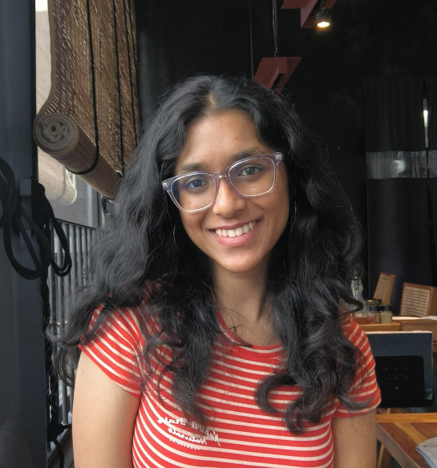

 Hello! My name is Akriti Agarwal. I am passionate about technology, creativity, animals, and food. I believe that curiosity is the key to success. Over the years, I have developed a deep interest in exploring new innovations and ideas, as well as building some myself.
I am currently pursuing my studies in the field of Computer Science with specialization in Data Science. I chose this field to understand more about data and machine learning to build real-time applications. I strive to create a balance between technical expertise and creative thinking, which allows me to approach problems with a unique perspective.
In my free time, I enjoy reading, playing with animals, and connecting with people who share similar passions. I believe in staying positive and embracing every opportunity to grow. As I move forward, I aim to make a meaningful impact and continue pushing boundaries.